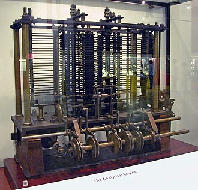
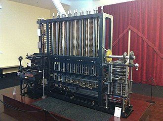

BIENVENUE SUR LA PAGE WEB DEDIEE A CHARLES BABBAGENé en 1791, précurseur de l'informatique moderne
Charles Babbage, né le 26 décembre 1791 et mort le 18 octobre 1871 à Londres, est un polymathe, mathématicien et inventeur visionnaire britannique du XIXe siècle qui est l'un des principaux précurseurs de l'informatique.
Il est le premier à énoncer le principe d'un ordinateur. C'est en 1834, pendant le développement d'une machine à calculer destinée au calcul et à l'impression de tables mathématiques (la machine à différences) qu'il a l'idée d'y incorporer des cartes du métier Jacquard, dont la lecture séquentielle donnerait des instructions et des données à sa machine, et donc imagine l'ancêtre mécanique des ordinateurs d'aujourd'hui. Il n'achève jamais sa machine analytique, mais il passe le reste de sa vie à la concevoir dans les moindres détails et à en construire un prototype. Un de ses fils en construit l'unité centrale (le moulin) et l'imprimante en 1888 et fait une démonstration réussie de calcul de table à l'académie royale d'astronomie en 1908.
C'est entre 1847 et 1849 que Charles Babbage entreprend d'utiliser les avancées technologiques de sa machine analytique pour concevoir les plans d'une machine à différences no 2 qui, à spécifications égales, demandait trois fois moins de pièces que la précédente.
En 1991, à partir de ces plans, on a pu reconstruire une partie de cette machine qui fonctionne parfaitement en utilisant les techniques qui étaient disponibles au XIXe siècle ce qui montre qu'elle aurait pu être construite du vivant de Charles Babbage.
Biographie
Famille, enfance et études
Charles Babbage est né au 44 Crosby Row, Walworth Road, Londres3 dans ce qui est maintenant le quartier londonien de Southwark. Son père est un prospère banquier londonien ce qui lui permet d'entrer à l'école privée de Forty Hill, Enfield dans le Middlesex. C'est dans cette école que commence sa passion pour les mathématiques et à la sortie de l'académie Forty Hill, il poursuit ses études à la maison sous la tutelle d'un professeur d'Oxford. Il étudie à Cambridge au Trinity College en 1810 et au collège Peterhouse.
Durant ce séjour au Trinity College, il fonde la Société Analytique en 1812 en compagnie de neuf autres mathématiciens universitaires et ainsi peut faire sa première publication en 1813 : On continued products dans Memoirs of the Analytical Society. Il obtient son diplôme à Cambridge en 1814 et, cette même année, épouse Georgiana Whitmore sans l'autorisation de son père.
Différents postes et sociétés
Dès l'âge de 29 ans, il est élu membre à la Société Royale de Londres et à celle d'Édimbourg, en 1820. La même année il fonde la « Société Royale d'Astronomie » où il est secrétaire pour les quatre premières années de l'existence de cette société.
Il a huit enfants avec son épouse, dont seulement trois atteignent l'âge adulte.
1827 – 1871
À la mort de son père en 1827, Charles Babbage hérite d'un grand domaine (dont la valeur est d'environ 100 000 £, soit plus de 13 032 477 £ en 20244), ce qui le rend riche5. Son épouse meurt la même année, Charles Babbage a alors 36 ans et décide de voyager en Europe.
Il meurt le 18 octobre 1871. Vers la fin de sa vie, il déclare qu'il aurait accepté une mort immédiate à condition de pouvoir passer trois jours, cinq cents ans plus tard, avec un guide scientifique pouvant lui expliquer toutes les inventions apparues depuis sa mort.
Contributions scientifiques
Conception d'un ordinateur
L'objectif de Charles Babbage est avant tout de concevoir des tables nautiques, astronomiques et mathématiques exactes, car celles de son époque comportent de nombreuses erreurs7. Charles Babbage s'aperçoit en effet que les tables de calculs comportent beaucoup d'erreurs, responsables, entre autres, de beaucoup d'accidents de navigation. Ainsi, il essaie de concevoir une machine (Difference Engine 1) qui pourrait exécuter le travail sans faute, les erreurs humaines étant occasionnées par la fatigue ou l'ennui.
Il développe cette idée depuis 1812. Deux facteurs semblent avoir contribué à sa décision de concevoir un tel appareil : sa connaissance des tables de logarithmes, et le travail déjà commencé dans ce domaine par Blaise Pascal (avec la « Pascaline ») et Gottfried Leibniz (multiplicatrice). Au cours de la conception de la machine, il entre en correspondance avec une jeune femme, Ada Lovelace : citée par Charles Babbage dans ses comptes-rendus de 1843, elle apparaît comme à l'origine de la résolution d'un algorithme basé sur une suite de Bernoulli8. C'est d’ailleurs sous son nom, « Lady Ada », qu'elle publie le premier algorithme destiné à être exécuté sur une machine9 : la machine à différences de Charles Babbage. Dans une correspondance avec Sir Humphry Davy en 1822, Charles Babbage y discute de certaines applications d'une telle machine, notamment pour le calcul et l'impression des tables mathématiques, et y discute aussi des principes d'une machine à calculer.
La machine à différences
Il présente un modèle de sa machine à différences à la Société royale d'astronomie en 1821. Le but de la machine est de calculer les polynômes en utilisant une méthode de calcul dite méthode des différences. La société approuve ce projet et demande au gouvernement britannique de lui accorder une bourse de 1 500 £ en 1823.
Débute alors la construction de cette machine qui ne sera jamais terminée. Il y a deux problèmes. Premièrement, le frottement affectant les embrayages de l'époque grippe le mécanisme et les vibrations sont gênantes. Deuxièmement, Charles Babbage modifie perpétuellement la conception de son projet. En 1833, 17 000 £ avaient été déboursées pour le projet sans aucun résultat satisfaisant, entraînant la brouille avec son constructeur, Joseph Clement.
Un roman de science-fiction (steampunk) de William Gibson et Bruce Sterling, La Machine à différences (1990), est construit autour de l'uchronie : « Et si Charles Babbage avait réussi à construire ses machines à différences ».
La machine analytique

Modèle d'essai d'une partie de la machine analytique, construit par Charles Babbage, exposée au Science Museum de Londres.
Une avancée fondamentale en matière d'automatisation des calculs est réalisée par Charles Babbage entre 1834 et 1836. Il y définit les principaux concepts sur lesquels reposent les machines informatiques.
La machine analytique de Charles Babbage utilise des cartes perforées pour ses données et ses instructions.
Mais Charles Babbage est dans l'incapacité, malgré ses efforts, de réaliser sa machine car les techniques de l'époque (roues dentées, leviers, tambours) sont insuffisantes.
Charles Babbage est le premier lauréat de la médaille d'or de la Royal Astronomical Society en 1824.
La machine à différences no 2

Difference Engine no 2 (Computer History Museum).
Pendant son travail sur la machine analytique, Charles Babbage se rend compte qu'il peut simplifier les plans de sa machine à différences. Entre 1847 et 1849, il dessine les plans de la machine à différences no 2.
Cette nouvelle machine requiert trois fois moins de pièces que la machine à différences no 1, tout en offrant une puissance de calcul équivalente. Charles Babbage n'essaya jamais de la construire.
En 1985, le musée des sciences de Londres entreprend de construire un exemplaire de la machine à différences no 2, afin de célébrer le 200e anniversaire de Babbage en 1991. Le module de calcul est terminé à temps en 1991, et c'est finalement en 2002 que la machine est totalement achevée avec son module d'impression et de stéréotype.
Construite en respectant scrupuleusement les plans originaux, elle est composée de 8 000 pièces, pèse 5 tonnes, mesure 3 mètres de large, 2 mètres de haut et 45 cm de profondeur. Cet exemplaire est aujourd'hui exposé au musée des sciences de Londres.
Un autre exemplaire, commandité par un des donateurs du projet, Nathan Myhrvold, est terminé au printemps 2008 par le musée des sciences de Londres. Exposé au Computer History Museum de Californie jusqu'en mai 2009, cet exemplaire rejoint ensuite la collection privée de M. Myhrvold.
Relations professionnelles
Par ailleurs Charles Babbage ayant été en relation constante et étroite avec Ada Lovelace qui est principalement connue pour avoir conçu et décrit le premier programme informatique publié, lors de son travail sur un ancêtre de l'ordinateur : la machine analytique de Charles Babbage. Le formalisme inédit de son algorithme, ainsi que la présence de la première boucle conditionnelle connue, font qu'Ada Lovelace est largement considérée comme la première développeuse informatique de l'histoire. Elle a également entrevu et décrit certaines possibilités offertes par les calculateurs universels, allant bien au-delà du calcul numérique et de ce qu'imaginaient Babbage et ses contemporains.
Anecdotes
Ada Lovelace naquit le 10 décembre 1815, la mmême année que George Boole né le 2 novembre 1815 qui a beaucoup contribué à l'évolution de l'industrie électronique numérique grace à son système d'algèbre de Boole servant à mettre en valeur un contenu logique et qui n'avait aucune utilité à son époque mais qui a su trouver plusieurs applications notamment dans la conception de circuits logiques numériques et de ce fait a pu contribuer fortement à l'avènement de l'informatique.